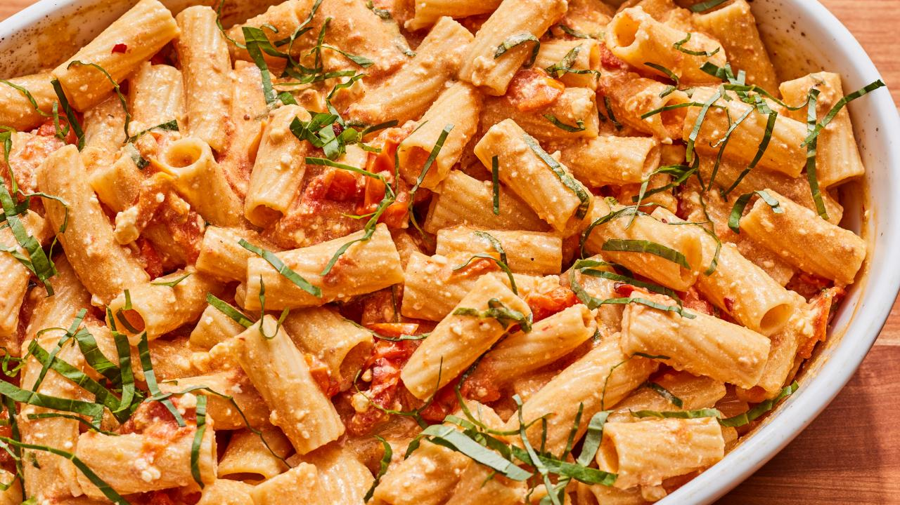

Recipe Blog
Homemade Pizza & Pizza Dough
Pre-Bake Dough, if cooking pizza in the oven. If you’re baking the pizza in the oven, whether on a pizza stone or not, I always pre-bake the dough for 4-5 minutes before adding toppings, to make sure the pizza dough cooks crisp on the outside and soft and airy in the middle. Once you add the Pizza Sauce and toppings, return it to the oven to finish baking.
The Flour! I call for bread flour, but all-purpose flour works perfectly well for this recipe. If you’d like to use whole wheat flour, check out my Wheat Pizza Crust Recipe!
Flavor the dough, if you’d like: This is a great basic pizza dough recipe, but you can spice it up to make it more flavorful by adding a few dashes of garlic powder, dried basil, and oregano.

Homemade Pasta
You only need 4 ingredients to make delicious fresh pasta at home, and there’s a good chance you have all of them on hand already:
All-purpose flour – In the past, I thought you needed 00 flour or semolina flour to make great fresh pasta, but this homemade pasta recipe proved me wrong. In it, regular all-purpose flour yields chewy, bouncy noodles every time.
Eggs – The key ingredient for adding richness and moisture to the dough!
Olive oil – Along with the eggs, a splash of olive oil moistens the dough and helps it come together.
Salt – Add it to the dough and the pasta water for the best flavor.

Homemade Spicy Chicken Biryani
Chicken Biryani or Murgh Biryani, is a classic Indian dish that has captured the hearts and taste buds of food lovers around the world. The recipe typically calls for a combination of aromatic spices like cumin, coriander, turmeric, and cinnamon, which are blended together to create a unique and flavourful spice blend. The chicken is marinated in this spice mix, which infuses the meat with its rich and complex flavours. The rice used in Biryani is equally important, with long-grain basmati rice being the preferred variety due to its light and fluffy texture that pairs perfectly with the spiced chicken.
To prepare chicken Biryani, the chicken is first cooked in a pot with a variety of aromatic ingredients such as onions, garlic, and ginger. Once the chicken is cooked through, it is layered on top of the rice in a large pot or Dutch oven, and the whole thing is baked in the oven or cooked on the stovetop until the rice is perfectly cooked and the flavors have melded together. The final result is a flavorful and aromatic dish that is sure to impress even the most discerning foodies.
Homemade Paneer Butter Masala
Step 1 Prepare the tomato-cashew nut gravy
To prepare this easy paneer recipe, take a pan and melt ghee in it. Once the ghee is melted, add ginger garlic paste and saute these ingredients for half a minute. Then add tomato puree to it. Stir well and then add cashew nut paste along with red chilli powder and salt. Mix well and cook for 2 minutes.
Step 2 Cook paneer in this gravy for 2 minutes
Now, add honey, kasoori methi powder, butter in the gravy and mix well. Cook for 2-3 minutes and then add paneer pieces to it. Stir gently and coat the gravy well over the paneer pieces.
Step 3 Garnish with fresh cream and serve Paneer Butter Masala hot
Add fresh cream (keep 1 tbsp aside) in the gravy along with 1/2 tsp chaat masala. Cook for 2-3 minutes. Your Paneer Butter Masala is ready! Garnish with remaining fresh cream and chaat masala. Serve Paneer Butter Masala hot with paratha, rotis or rice!